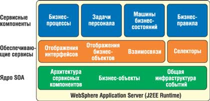

По материалам корпорации IBM (http://www.ibm.com/ru).
Весь комплекс ПО корпорации IBM относится в целом к категории "промежуточного слоя" (middleware), а значит, нацелен на решение задач интеграции в самых разных аспектах этой проблемы - интеграции данных, людей, приложений, ресурсов, процессов. В более узком смысле (имея в виду ИТ-инфраструктуру) на этот класс задач нацелено семейство продуктов WebSphere. Учитывая потребности сегодняшнего дня, IBM пересмотрела свой портфель программных продуктов на платформе WebSphere, чтобы они полнее соответствовали потребностям бизнеса, возникающим при построении сервис-ориентированных архитектур (а значит, и бизнеса по требованию), и выпустила целый ряд новых программных продуктов и услуг.
В этой статье мы рассмотрим линейку продуктов IBM WebSphere Business Integration*, в которую входят Business Modeler, Integration Developer, Enterprise Service Bus, Process Server, Business Monitor, Message Broker, MQ и Partner Gateway. Это ПО охватывает весь спектр задач бизнес-интеграции - от связывания приложений до автоматизации процессов. Список его функциональных возможностей включает следующие:
- моделирование корпоративных бизнес-процессов;
- интеграция средств обработки;
- соединение заказчиков и бизнес-партнеров;
- сквозной мониторинг бизнес-процессов;
- управление эффективностью и оптимизация бизнес-процессов.
*О решениях IBM для интеграции информации см. статью "IBM WebSphere Information Integrator - интеграция данных и контента по запросу", "BYTE/Россия" № 6'2005.
WebSphere Business Modeler
WebSphere Business Modeler 6.0 реализован на базе Eclipse и содержит программные средства, позволяющие бизнес-аналитикам графически моделировать бизнес-процессы. В ходе моделирования система фиксирует повторяющиеся "шаблоны" - набор операций, необходимых для достижения какой-либо бизнес-цели. Формализация и последующее применение шаблонов позволяет оптимизировать и автоматизировать соответствующие бизнес-процессы.
Инструмент может моделировать бизнес-процессы, элементы бизнеса (документы и продукты), ресурсы (персонал и физические активы) и структурные отношения между элементами организации. Он позволяет проанализировать перечисленные процессы и элементы, а затем включить их в имитационную модель.
При работе в среде WebSphere Business Modeler можно выбрать соответствующий профиль пользователя, который задает требуемый уровень детализации при работе с моделями. Базовый профиль (Basic Business Modeling) предназначен для бизнес-аналитиков, работающих с высокоуровневым представлением модели бизнес-процесса. Промежуточный профиль (Intermediate Business Modeling) предполагает более подробное описание технических деталей модели, включая бизнес-правила и логику бизнеса, которые применяются к элементам модели. Профиль высшего уровня (Advanced Business Modeling) нацелен на разработку детальных моделей бизнес-процессов, на основании которых создаются программные приложения.
При построении бизнес-процессов используются различные технологические режимы.
Режим на основе технологии BPEL. Бизнес-процесс, представленный в формате BPEL, импортируется в инструмент WebSphere Studio Application Developer Integration Edition, с помощью которого и будет создан программный код приложения, реализующего данный процесс.
Режим на основе технологии FDL. Описания бизнес-процессов на языке FDL используются в решении WebSphere MQ Workflow в качестве основы для автоматизации рабочего процесса.
Режим Operational. Этот технологический режим позволяет задать более высокий уровень детализации, чем два предыдущих.
WebSphere Integration Developer
Сочетание WebSphere Integration Developer с другими инструментами IBM, с одной стороны, и WebSphere Process Server и Application Server, с другой, образует платформу для проектов бизнес-интеграции и служит идеальным решением для реализации гибких сред на базе сервисно-ориентированной архитектуры (SOA). Версия продукта 6.0 создана на платформе Eclipse 3.0 и реализует концепцию ролевой разработки. При необходимости эта среда может интегрироваться с инструментом бизнес-аналитики IBM WebSphere Business Modeler 6 и с инструментом разработки J2EE- и Web-решений IBM Rational Application Developer 6.
Данное ПО позволяет упростить ИТ-инфраструктуру, представляя существующие ИТ-системы как компоненты сервисов для многократного использования и повышения эффективности. Он дает разработчикам интеграционных проектов возможность создавать для бизнеса сложные решения с минимальными навыками, предоставляя единый инструмент для описания всех процессов на основе стандартов.
В WebSphere Integration Developer входят средства тестирования, отладки и развертывания для разработки решений. Многократное использование компонентов упрощается за счет онлайновых модулей и библиотек. В его составе также имеются готовые конструкции для построения динамических процессов, включая бизнес-правила, машины бизнес-состояний и селекторы, мероприятия и ролевые функции для задач. Продукт устанавливается на WebSphere Process Server.
WebSphere Enterprise Service Bus
Enterprise Service Bus (ESB) - это гибкая коммуникационная инфраструктура для интеграции приложений и сервисов, применение которой позволяет уменьшить число и сложность интерфейсов между компонентами системы. ESB распределяет сообщения между сервисами, конвертирует транспортные протоколы и форматы сообщений между источником запроса и сервисом, а также управляет бизнес-событиями различных источников.
ESB позволяет организациям сосредоточиться на основных задачах бизнеса, а не на ИТ-инфраструктуре, необходимой для связывания программ между собой, и добавлять новые сервисы или изменять существующие при минимальном или нулевом воздействии на работу уже имеющихся сервисов. Он обеспечивает перемещение данных между приложениями, распознавание формата данных, интеллектуальную маршрутизацию и преобразование форматов данных XML. С его помощью можно использовать WebSphere MQ в качестве инфраструктуры для коммуникационного взаимодействия между приложениями, а также применять другие коммуникационные протоколы, такие, как JMS или HTTP.
WebSphere ESB построен на основе WebSphere Application Server. Продукт можно использовать совместно с WebSphere Integration Developer или с Rational Application Developer (если нужно писать Java-код). Для построения единой сервисной шины предприятия IBM в дополнение к ESB предлагает решение IBM WebSphere Message Broker.
WebSphere Process Server
SOA и Web-сервисы быстро превращаются в стандартные средства построения интеграционных приложений. Заказчики все больше убеждаются в том, что слабосвязанные интеграционные приложения на основе SOA обеспечивают высокую степень гибкости и оперативности, что, в свою очередь, сокращает время выхода на рынок, снижает совокупную стоимость владения и уменьшает риски.
Средство IBM WebSphere Process Server, реализованное на базе WebSphere Application Server V6, предоставляет заказчикам широкий спектр возможностей, помогающих решать современные интеграционные задачи, в том числе автоматизировать бизнес-процессы. Оно полностью соответствует принятой в IBM эталонной архитектуре интеграции WebSphere Integration Reference Architecture. В состав Process Server входит также инструмент WebSphere Integration Developer.
Для создания эффективного SOA-решения необходимы как универсальная модель вызова компонентов, так и универсальное представление данных. Решение WebSphere Process Server отвечает обоим этим требованиям. Технологическая основа универсальной модели вызова реализована в виде так называемой архитектуры сервисных компонентов (Service Component Architecture, SCA), а технологической основой универсального представления данных служат бизнес-объекты (Business Object). При использовании SCA все интеграционные артефакты описываются как компоненты сервисов с детально проработанными интерфейсами. Кроме того, в SCA реализована концепция модуля, которая позволяет объединять компоненты сервиса и выполнять его дальнейшую детализацию и инкапсуляцию.
В состав WebSphere Integration Developer входит инструмент Assembly Editor, с помощью которого разработчик объединяет различные компоненты в модуль и указывает, при помощи каких сервисных интерфейсов этот модуль будет взаимодействовать с внешними потребителями. В качестве сервисов могут выступать импортируемые компоненты, например, Java Beans и Web-сервисы, а также компоненты сервисов, предоставляемые WebSphere Process Server. После этого модули соединяются между собой в полное интегрированное решение.
Концепция SCA позволяет разработчику реализовать интеграционную логику внутри соответствующих модулей. При таком подходе изменение компонента сервиса внутри модуля не повлияет на остальные модули, входящие в состав интеграционного решения, поскольку интерфейс измененного модуля остается прежним. Этот подход действует в масштабе всего решения WebSphere Process Server. В этом решении все интеграционные артефакты (процессы, бизнес-правила, задачи персонала и т. д.) представляются в виде компонентов SCA-сервисов, которые могут запускаться как в синхронном, так и в асинхронном режиме. Это создает очень гибкую среду. Например, можно беспрепятственно заменить какой-либо модуль, содержащий задачу персонала (например, модуль получения утверждения), на модуль, содержащий бизнес-правило. Если интерфейс модуля остается таким же, то новый модуль устанавливается и автоматически подключается ко всем взаимодействующим с ним модулям, не требуя в последних никаких изменений.
Бизнес-объект - это расширение объекта типа Service Data Object (SDO), образующего уровень абстракции при доступе к данным. В отличие от объектов SDO, универсального средства представления разнородных данных (это могут быть данные, описанные как JDBC ResultSet, XML-схема и т. д.), бизнес-объекты включают несколько расширений, играющих важную роль в интеграционных решениях, и используются для более детального представления данных, которыми обмениваются сервисы архитектуры SCA. В частности, к расширениям относятся такие метаданные, как хронология изменений, сведения о контексте определенной информации (даты обновления, создания, удаления) и т. д.
Хотя SCA и бизнес-объекты - это новые концепции, их реализация основана на существующих стандартах. Например, интерфейсы любого компонента сервиса SCA описываются на языке WSDL или с помощью Java-интерфейсов, а бизнес-объекты - с помощью XML-схем (XSD).
В решении WebSphere Process Server все ключевые сервисы соединения реализованы на основе собственного провайдера JMS, обеспечивающего полную совместимость с существующими сетями на базе WebSphere MQ, поддержку Web-сервисов и архитектуры Java 2 Connector Architecture 1.5 (см. рисунок).
|  | Архитектура WebSphere Process Server.
|
Общая инфраструктура событий (Common Event Infrastructure, CEI) обеспечивает фиксацию событий, которые можно использовать для мониторинга приложений при помощи решения IBM WebSphere Business Monitor или других продуктов IBM.
Над рабочей инфраструктурой и SOA-ядром в решении WebSphere Process Server функционируют различные сервисные компоненты. К обеспечивающим сервисам относятся компоненты, необходимые для любого интеграционного решения, например, сервисы преобразования и синхронизации данных.
Отображения интерфейсов. Во многих случаях интерфейсы существующих компонентов соответствуют друг другу семантически, но имеют различный синтаксис. Отображения интерфейсов позволяют вызывать такие компоненты путем трансляции соответствующих обращений.
Отображения бизнес-объектов используются для преобразования бизнес-объекта из одного типа в другой.
Отношения. Сценарий бизнес-интеграции часто предполагает обращение к одним и тем же данным (например, к записям о клиентах), используемым несколькими серверными системами, например, ERP и CRM. Распространенная проблема при синхронизации бизнес-объектов состоит в том, что разные серверные системы используют разные ключи для представления одного и того же объекта. Сервис отношений может служить для установления соответствия между идентичными объектами в разных серверных системах.
Селекторы. Эти компоненты обеспечивают динамический выбор и вызов различных сервисов, использующих один и тот же интерфейс. Например, бизнес-процесс "Поддержка заказчика" может задействовать разные варианты задач персонала - для праздничных и для обычных рабочих дней.
WebSphere Process Server поддерживает основные компоненты, кратко охарактеризованные ниже.
Бизнес-процессы. В их основе лежит механизм управления бизнес-процессами, совместимый со стандартом WS-BPEL, а именно четвертый выпуск "дирижера"" бизнес-процессов, функционирующего на верхнем уровне архитектуры WebSphere Application Server. Модели, соответствующие стандарту WS-BPEL, можно создавать с помощью инструмента WebSphere Integration Developer или импортировать из бизнес-модели, созданной с помощью инструмента WebSphere Business Modeler.
Задачи персонала в решении WebSphere Process Server - это автономные компоненты, с помощью которых сотрудникам поручается определенная работа или вызываются какие-либо другие сервисы. Кроме того, инструмент Human Task Manager позволяет описывать специальные задания и отслеживать их выполнение. Для получения информации о персонале предназначены существующие каталоги LDAP (а также репозитарии ОС и реестры пользователей WebSphere).
Поддерживается перевод задач персонала на следующие иерархические уровни, в том числе посредством оповещений по электронной почте и по истечении сроков действия приоритетов. В состав WebSphere Process Server входит расширяемый Web-клиент, который может служить для работы с заданиями и процессами.
Машины бизнес-состояний (Business State Machine) - один из способов моделирования бизнес-процесса. Этот способ позволяет организации описать свои бизнес-процессы с помощью состояний и событий, что в некоторых случаях оказывается проще, чем моделировать бизнес-процессы с помощью графов.
Бизнес-правила - это средство внедрения и отслеживания бизнес-политики посредством вывода бизнес-функции вовне. Данный механизм обеспечивает динамическое внесение изменений в бизнес-процесс для повышения оперативности бизнес-среды. Для разработки бизнес-правил существует инструмент на базе платформы Eclipse. В состав WebSphere Process Server входит также работающий в реальном времени Web-инструмент бизнес-аналитики, по мере необходимости обновляющий бизнес-правила без нарушения работы других сервисов.
Все функции WebSphere Process Server настраиваются и администрируются с помощью специальных расширений консоли администратора WebSphere Application Server и различных конфигурационных средств.
WebSphere Process Server использует все возможности сервера приложений при управлении транзакциями, безопасностью, кластеризацией и рабочей нагрузкой, формируя среду бизнес-интеграции с высокой степенью масштабируемости и надежности. Он также обеспечивает полную поддержку транзакций ACID при реализации бизнес-процессов, как коротких (одна транзакция от начала до конца), так и длительных (множество транзакций). В состав продукта также входят инструменты восстановления - Recovery Manager и Recovery Console. Если в процессе выполнения какого-либо приложения происходит ошибка, Process Server позволяет администратору через консоль Recovery Console применить соответствующие процедуры к отказавшему приложению.
Решение WebSphere Process Server дает множество возможностей для интеграции. Помимо импорта/экспорта собственных объектов (SCA-компонентов, Web-сервисов, JMS и Enterprise Java Session Beans), это решение обеспечивает первоклассную совместимость с существующими приложениями на базе WebSphere MQ. Кроме того, можно использовать адаптеры WebSphere двух типов - адаптеры для определенных продуктов (например, Siebel, SAP, PeopleSoft) и для определенных технологий, например, для реляционных баз данных или текстовых файлов.
WebSphere Business Monitor
Продукт отображает поступающие в режиме реального времени данные о событиях, связанных с IBM WebSphere MQ Workflow. Функции уведомления и предупреждения ключевых пользователей помогают непрерывно совершенствовать бизнес-процессы. В состав решения входят два основных компонента: пульт управления рабочими процессами и пульт управления бизнесом.
Настраиваемые пульты управления реализованы в виде интуитивно понятных страниц WebSphere Portal с картами сравнительных показателей, ключевыми показателями производительности и стрелочными индикаторами. Встроенные средства бизнес-аналитики поддерживают многомерный анализ и отчетность.
Аналитические компоненты контролируют существующие бизнес-процессы так, как укажет бизнес-пользователь. При этом WebSphere Business Monitor позволяет интегрировать с бизнес-процессами развитые средства бизнес-аналитики. Пользователь может выполнять фильтрацию отчетов, а компонент Adaptive Action Manager инициирует выбранные действия или последовательности действий в реальном времени на основании установленных правил и политик.
В состав продукта входит IBM WebSphere Business Modeler Basic 6.0 - средство моделирования, проверки и документирования для подразделений компаний и индивидуальных пользователей. В то же время WebSphere Business Monitor может работать с расширенным инструментом WebSphere Business Modeler Advanced с поддержкой языков Business Process Execution Language (BPEL) и Workflow Definition Language (FDL).
WebSphere Message Broker
Этот брокер расширяет функции обмена сообщениями WebSphere MQ, добавляя к ним средства маршрутизации, преобразования и публикации/подписки сообщений. Message Broker предоставляет среду выполнения для поддержки потоков сообщений. Эти потоки состоят из графа узлов, который реализует необходимую обработку для интеграции приложений, и могут выполнять самые разнообразные функции, в числе которых следующие:
- маршрутизация сообщений для нескольких целевых мест назначения на основе содержания сообщения или его заголовка (поддерживаются топологии "один ко многим" и "многие к одному");
- преобразование сообщений в разные форматы, что позволяет разным приложениям обмениваться сообщениями;
- дополнение содержимого сообщений в процессе передачи (например, за счет поиска в базе данных, выполняемого брокером сообщений);
- хранение информации, извлеченной из сообщений в процессе их передачи в базу данных (с помощью брокера сообщений);
- публикация сообщений и использование подписчиками критериев, исходящих из темы или содержания, для выбора подлежащих получению сообщений;
- взаимодействие с другими механизмами поддержки соединения, например, MQSeries Everyplace;
- расширение базовой функциональности WebSphere MQ Message Broker с помощью подключаемых узлов на языках Java и C/C++;
- обработка содержимого сообщений в целом ряде доменов сообщений, включая домен XML, который обрабатывает самоопределяемые (или типовые) сообщения XML, Message Repository Manager (MRM), обрабатывающий предварительно заданные наборы сообщений, и неструктурированные данные (домен BLOB).
WebSphere Message Broker предоставляет опции масштабируемости в виде копий потоков сообщений и групп выполнения и упрощает интеграцию существующих приложений и Web-сервисов за счет преобразования и маршрутизации сообщений SOAP, а также при помощи регистрации транзакций Web-сервисов. Кроме того, он выступает в роли посредника между Web-сервисами и другими моделями интеграции и обеспечивает интегрированную транспортировку данных WebSphere MQ для корпоративной, мобильной и широковещательной связи, а также для передачи данных в режиме реального времени и конечных точек телеметрии. Инструментарий Message Broker Toolkit for WebSphere Studio реализован на базе Eclipse.
WebSphere Business Integration Server работает с двумя разными, но совместимыми между собой брокерами интеграции: WebSphere InterChange Server и WebSphere Message Broker. Системы интеграции, которые используют эти два брокера, довольно существенно различаются. WebSphere InterChange Server представляет собой механизм интеграции процессов. Его основная цель - упорядочить взаимодействия между приложениями, а для этого ему необходимо сохранять информацию о состоянии и реализовывать такие концепции, как компенсирующие транзакции и динамические перекрестные ссылки. WebSphere Message Broker, в свою очередь, предлагает службы для соединения приложений. Обычно они выполняют роль посредников между приложениями, обеспечивая быструю маршрутизацию и преобразование данных. Оба продукта способны без проблем работать друг с другом. WebSphere Message Broker может выполнять роль посредника, предоставляя службы для связи между приложениями и WebSphere InterChange Server.
WebSphere Message Broker поддерживает обширный список ОС (Windows Server, AIX, HP-UX, Solaris, Linux для Intel, Linux для zSeries и z/OS) и использует базу данных DB2 в качестве репозитария для хранения информации о конфигурации. Кроме того, оба брокера используют базу данных для хранения той информации, которая им необходима для обработки сообщений. При этом поддерживаются следующие базы данных: IBM DB2 UDB Enterprise Edition, IBM DB2 UDB для z/OS и OS/390, Oracle, Sybase Adaptive Server Enterprise (ASE), Microsoft SQL Server. Configuration Manager и Message Broker Toolkit for WebSphere Studio поддерживаются только на платформах Windows.
IBM WebSphere MQ
WebSphere MQ - это современное связующее ПО IBM, предназначенное для организации очередей и обмена сообщениями. Это решение может быть развернуто на широком спектре платформ и ОС. Оно позволяет программам обмениваться между собой информацией через сеть, состоящую из разнородных компонентов, таких, как процессоры, подсистемы, ОС и коммуникационные протоколы. WebSphere MQ дает возможность:
- соединять любую существующую сегодня коммерческую систему (поддерживает более 35 платформ);
- справляться с нарушениями в работе сети - важные данные доставляются всегда;
- обеспечивать гарантированную однократную доставку;
- интегрировать разнородные "островки" автоматизации;
- поддерживать не зависящую от времени коммуникацию;
- поддерживать высокую пропускную способность (заказчики обрабатывают более 250 млн сообщений в день);
- выполнять SSL-взаимодействие.
WebSphere Partner Gateway
Это ПО представляет собой консолидированный шлюз взаимодействий типа бизнес-бизнес (B2B), позволяющий распространить интеграцию процессов за пределы предприятия и снизить затраты на интеграцию B2B. Решение интегрирует внешние процессы и партнерские сообщества с внутренними процессами и инфраструктурами компании, предоставляя широкие возможности управления профилями партнеров и простые, надежные и защищенные средства для обмена сообщениями на уровне B2B.
Данный продукт - это выпущенная под новым названием очередная версия ПО WebSphere Business Integration Connect V4.2, унаследовавшая все его возможности. Partner Gateway формирует единую среду управления B2B-взаимодействиями с партнерами, поддерживающую традиционные форматы данных и протоколы передачи сообщений на основе EDI и XML для B2B-интеграции, такие, как AS1, AS2 и RosettaNet. Продукт позволяет компании оперативнее реагировать на изменения внешних условий. В результате бизнес-процессы - интегрированные полностью как внутри компании, так и вне ее, с основными партнерами, поставщиками и клиентами - могут оперативно реагировать на любые требования заказчиков, возможности рынка и внешние угрозы.
WebSphere Partner Gateway V6.0 выпускается в трех версиях: Express, Advanced Edition и Enterprise Edition. Express - это центральный шлюз B2B, поддерживающий обмен данными по протоколам HTTP, HTTPS и AS2 и до пяти внешних соединений. Advanced Edition предназначена для интеграции больших деловых сообществ и лицензируется на определенное число внешних соединений. Наконец, Enterprise Edition - это центральный шлюз B2B для интеграции больших деловых сообществ с неограниченным числом внешних соединений.
Версии Advanced и Enterprise Edition, появившиеся в этом выпуске ПО, имеют ряд особенностей: встроенную поддержку EDI (Electronic Data Interchange), графический инструмент составления схем обмена данными по принципу drag-and-drop, дополнительный интерфейс RosettaNet Partner Interface Process (PIPs), усовершенствования, касающиеся удобства использования и производительности, возможность установки на WebSphere Application Server 6.